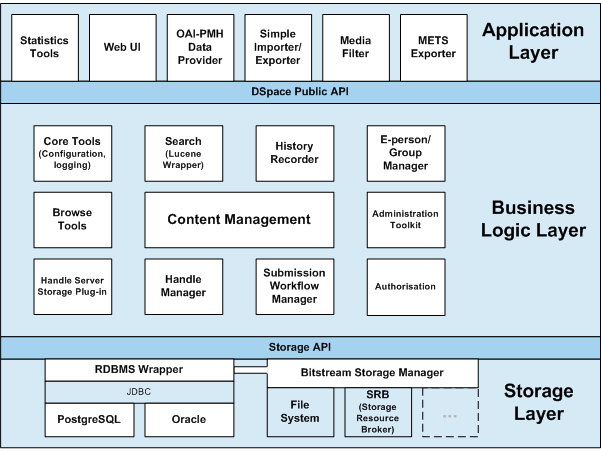

The DSpace system is organized into three layers, each of which consists of a number of components.

DSpace System Architecture
The storage layer is responsible for physical storage of metadata and content. The business logic layer deals with managing the content of the archive, users of the archive (e-people), authorization, and workflow. The application layer contains components that communicate with the world outside of the individual DSpace installation, for example the Web user interface and the Open Archives Initiative protocol for metadata harvesting service.
Each layer only invokes the layer below it; the application layer may not used the storage layer directly, for example. Each component in the storage and business logic layers has a defined public API. The union of the APIs of those components are referred to as the Storage API (in the case of the storage layer) and the DSpace Public API (in the case of the business logic layer). These APIs are in-process Java classes, objects and methods.
It is important to note that each layer is trusted. Although the logic for authorising actions is in the business logic layer, the system relies on individual applications in the application layer to correctly and securely authenticate e-people. If a 'hostile' or insecure application were allowed to invoke the Public API directly, it could very easily perform actions as any e-person in the system.
The reason for this design choice is that authentication methods will vary widely between different applications, so it makes sense to leave the logic and responsibility for that in these applications.
The source code is organized to
cohere very strictly to this
three-layer architecture. Also, only methods in a component's public
API are given the public
access level. This means that
the Java compiler helps ensure that the source code conforms to the
architecture.
| Packages within | Correspond to components in |
|---|---|
org.dspace.app |
Application layer |
org.dspace |
Business logic layer
(except storage
and app) |
org.dspace.storage |
Storage layer |
The storage and business logic layer APIs are extensively documented with Javadoc-style comments. Generate the HTML version of these by entering the source directory and running:
ant public_api
The package-level documentation of each package usually contains an overview of the package and some example usage. This information is not repeated in this architecture document; this and the Javadoc APIs are intended to be used in parallel.
Each layer is described in a separate section: